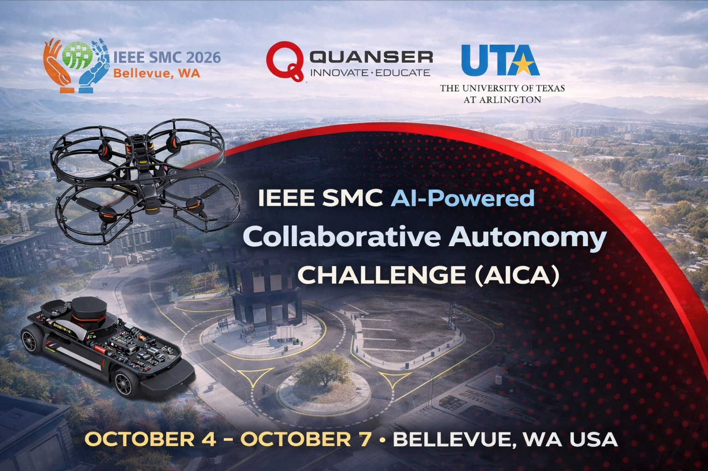

IEEE SMC 2026 • QUANSER • UTA
Home Portal
Welcome to the IEEE SMC AI-Powered Collaborative Autonomy Challenge (AICA).
This competition is organized as part of the IEEE SMC 2026 Conference, in collaboration with Quanser and The University of Texas at Arlington (UTA). We sincerely acknowledge and thank all supporting partners, organizers, and contributors for enabling this initiative.
Overview
The IEEE SMC AI-Powered Collaborative Autonomy Challenge (AICA) is a competition focused on developing autonomous algorithms for collaborative delivery using heterogeneous systems.
The competition is conducted in two stages:
-
Virtual Stage – Teams develop, implement, and test their solutions in Quanser’s QLabs simulation environment based on the provided virtual stage scenario, and submit a video link demonstrating complete mission execution and system performance.
-
In-Person Stage – The Top 3 teams, based on virtual-stage results, will be invited to compete at the IEEE SMC 2026 Conference (October 4–7, Seattle, Washington). In this stage, teams will execute and demonstrate their solutions in the same QLabs simulation environment based on the In-person Stage scenario.
Teams are required to design and implement coordination strategies between ground and aerial vehicles to complete delivery missions efficiently under realistic constraints.
AICA focuses on collaborative autonomous delivery using:
- QCar2 (ground vehicle)
- QDrone2 (aerial vehicle)
Content
- Competition Objective
- Announcements
- Timeline
- Registration
- Submission Guide
- System and Software Setup
- Contact us